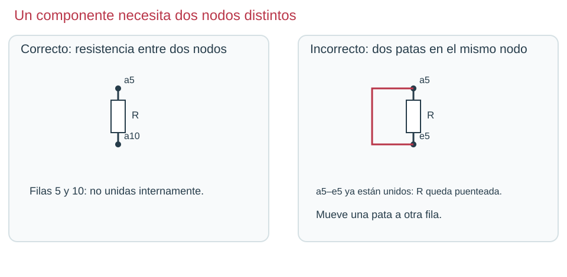

Contenido
Comprobar en orden
Cuando un circuito no hace lo esperado, lo más rápido es seguir siempre el mismo orden. Cambia una sola cosa cada vez y vuelve a medir.
- Fuente: ¿tiene el valor correcto? ¿Está en marcha la simulación?
- Camino: sigue con el dedo el recorrido desde el + hasta el −. ¿Llega cada cable a su terminal?
- Valores: haz clic en cada resistencia. ¿Tiene el número y la unidad correctos (kΩ, no Ω)?
- Medida: ¿está el multímetro en el modo correcto? ¿Están las puntas en los nodos que quieres comparar?
Tres fallos típicos
| Síntoma | Causa probable | Cómo lo compruebas |
|---|---|---|
| La salida marca 0 V | Las dos puntas están en el mismo nodo, o falta el cable de vuelta | Sigue el camino y mira dónde está cada punta |
| Marca 4,99 V en lugar de 3,44 V | Una resistencia vale 2,2 Ω en vez de 2,2 kΩ | Haz clic en cada resistencia y mira su unidad |
| La lectura no cambia al cambiar R | El cambio no se aplicó | Pulsa Intro tras escribir y vuelve a iniciar la simulación |

Practica con un compañero
- Abre tu divisor S5 divisor, detén la simulación y estropéalo a propósito con uno de los fallos de la tabla. Apunta cuál.
- Cámbiate de sitio con tu compañero. Cada uno busca el fallo del otro siguiendo el orden de arriba y dice qué comprobación le dio la pista.
- Arreglad los dos circuitos y comprobad que vuelven a dar 3,44 V.
Deja tu proyecto listo para revisar
Tu profesor ve todos tus diseños desde la clase de Tinkercad. Para que encuentre el que toca:
- Ponle el nombre que se pide (por ejemplo, S5 divisor).
- Si una entrega pide el enlace, abre el diseño y copia la dirección de la barra del navegador.
- No crees cuentas nuevas ni entres por otro camino: entonces el diseño no aparecería en la clase.
Ahora tú. Escribe en tu informe (apartado 1) cuál fue el fallo de tu compañero, qué comprobación lo descubrió y cómo lo arreglasteis.
Ver solución
Por ejemplo: «La salida marcaba 4,99 V. Al hacer clic en R₂ vi que valía 2,2 Ω. La cambié a 2,2 kΩ y volvió a dar 3,44 V».
Compruébalo
Ordena las comprobaciones de un circuito que no funciona.
- Comprobar que la fuente tiene el valor correcto y que la simulación está en marcha
- Seguir el camino desde el + hasta el − cable a cable
- Comprobar el valor y la unidad de cada resistencia
- Comprobar el modo del multímetro y dónde están las puntas
- Cambiar una sola cosa y volver a medir